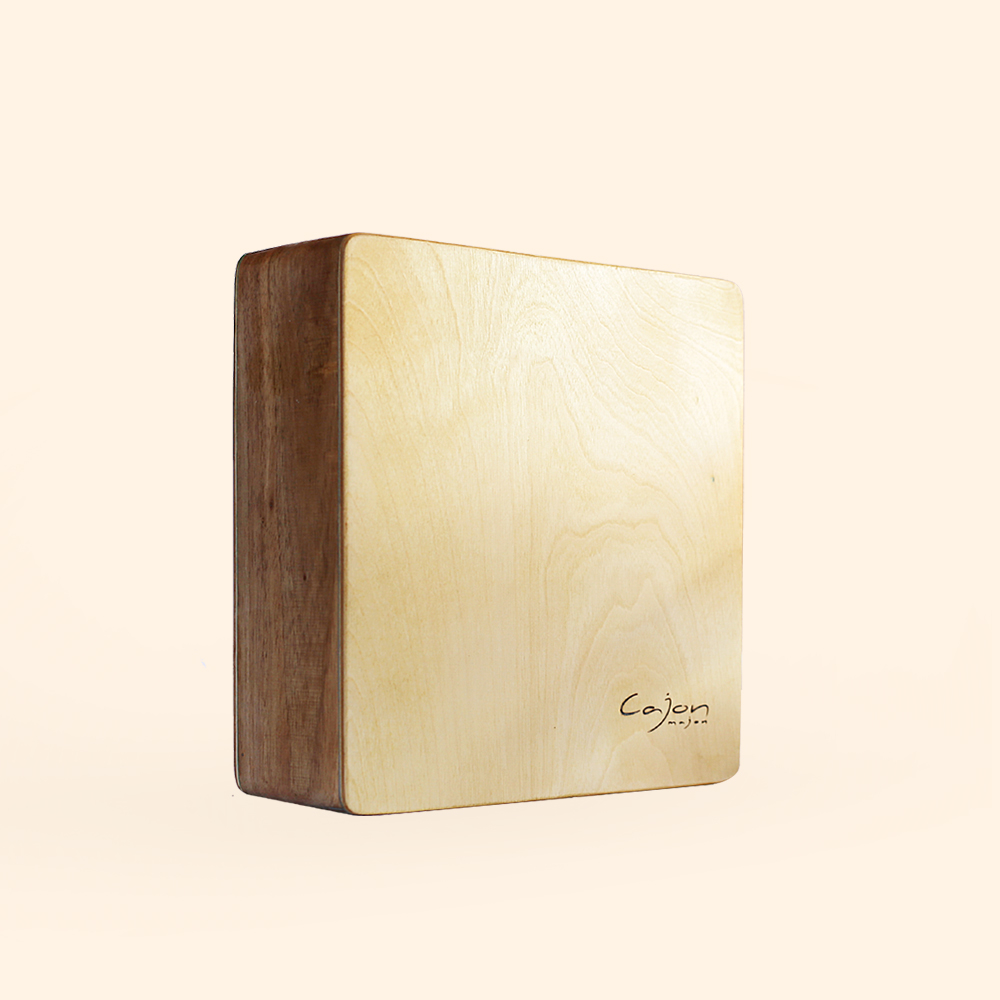
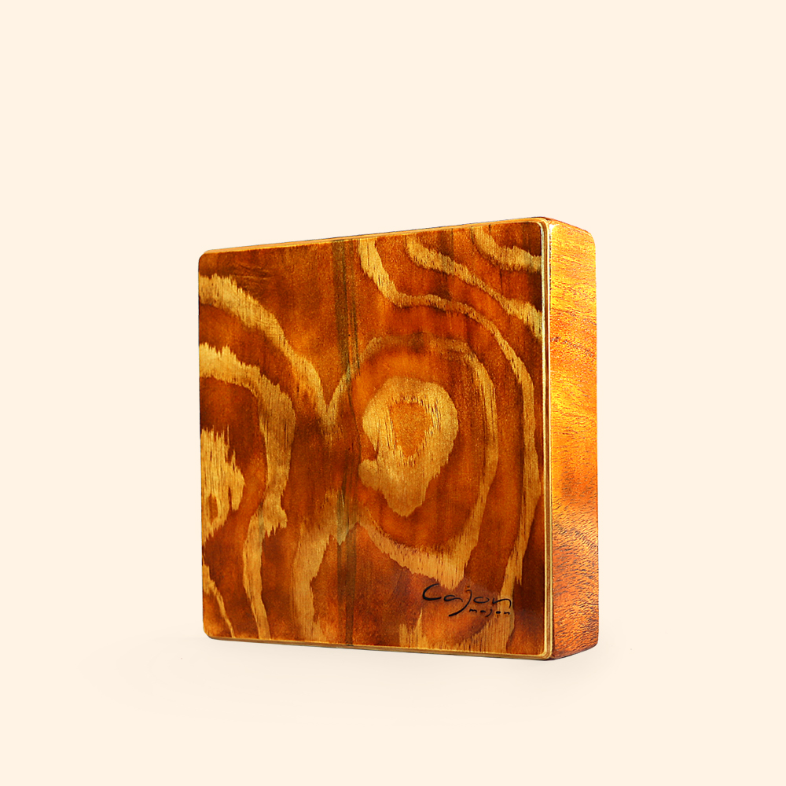
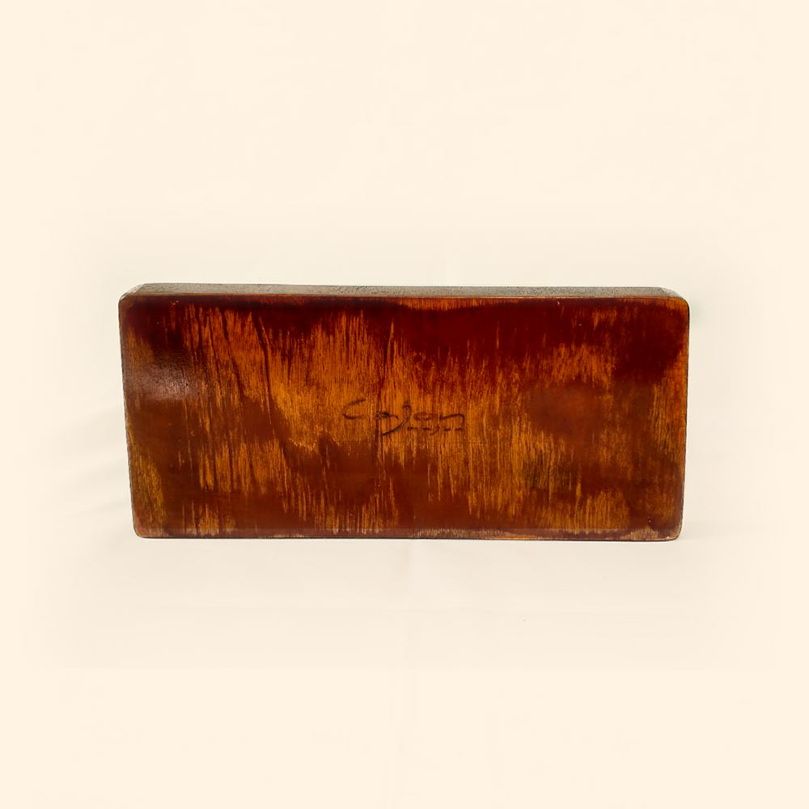
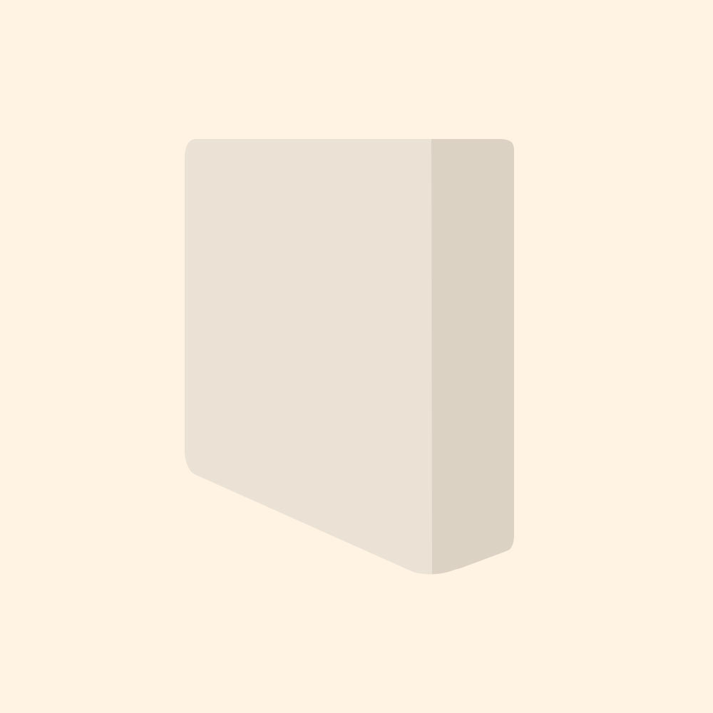

Cajon Majon —
a tiny percussion instrument.
Uniquely inspired by Peruvian native instruments, we decided to create something special—a brand new drumpad that you сan take anywhere with you. But small size doesn't meen small sound.
Cajon-majon is an amazing new percussion instrument that will bring you a lots of fun. Perfectly shaped and made of carefully selected wood collected all round the world.

Karo Cajon
Size: 23 × 23 × 7.5
Tapa: Birch
Resonator: Pine
Frame: Mango Tree
Very smooth snare and deep bass. Lightweight (640g). Any colour is availaible — our manager will confirm all details with you via e-mail.

Rum Cajon
Size: 23 × 23 × 7.5
Tapa: Birch
Resonator: Birch
Frame: Pine
Double snare provides grain sound and sharp slap on the entire surface of tapa. Any colour is availaible — our manager will confirm all details with you via e-mail.

Fingerpad
Size: 12 × 7 × 25
Tapa: Birch
Resonator: Pine
Frame: Teak
For everyday fingerdrumming practice. Quiet and gentle. The fingerpad is divided into 3 playing surfaces which gives a variety of sounds: tone, slap and brush-like snare.

Wild
Beach
Cajon
A new cajon-based extra-bass and loud instrument is coming! We've almost finished all engineering jobs and made a prototype.
Now it's about months to start selling this new thing! Stay tuned!
Delivery
You'll get free worldwide delivery. It will take from 10 to 20 days depends on your location. Our main office is based in South India, other one is in Sweden.
Waranty & Moneyback
All cajons are handcrafted and carefully checked before packing. If you are not completely satisfied with your Cajon, you may replace or exchange for a different model or simply receive a full refund.
It all started with a simple idea to make a lightweight, compact drum that could be taken anywhere your creativity goes and used spontaneously wherever you travel. First we did it for oursleves and friends. After some experiments with size and materials we created a variety unique sounds that we feel will meet your needs as percussionist... Now many of our musicians friends has our #cajonmajon.
We understand process of making a bell-shaped form, the choice of wood, the diameter of the bass reflex, and the amount of lacquer. Now we are proud of our birdhouses and can't stop in their production.
— Arthur Floria
Co-founder and CTOWhen Artur made the first cajon, it was big, flat and heavy. I wanted to have the same smooth box but only half the size without losing the deep rich sound of. After I fell in love with the word "Cajon", with the Spanish "j". So, on my Red Square Box I wrote Cajon. From this inscription a logo was born. Each custom built cajon is branded with our logo so you know it was hand crafted with love and care.
Now I am now constantly surrounded by new musicians who come to our workshop to try the cajon and connect with us through jamming. My phone is full of photos and video of lovely cajonitos. Our instagram full of drummers from all over the world.
Each Cajon is built with love and care. Although it is diffucult to separate from them, we take pride in knowing that we are sharing a piece of our love to you.
— Karina Romanova
Co-founder and CEO